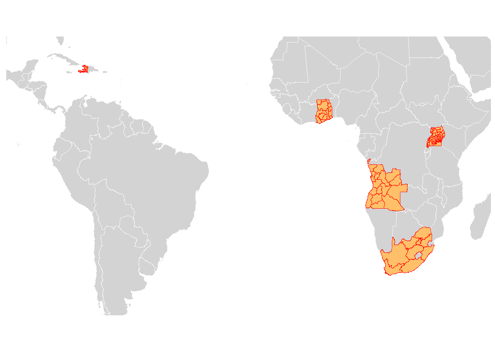
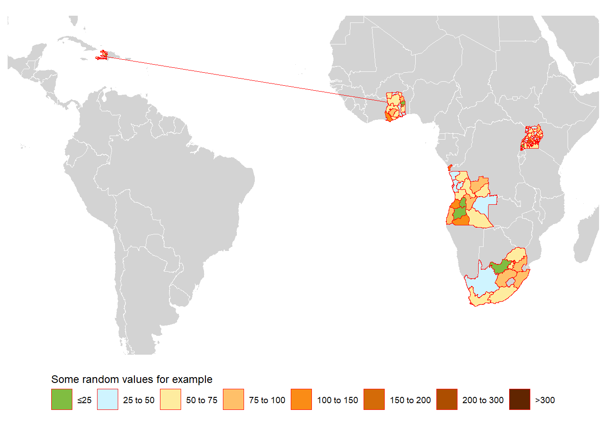
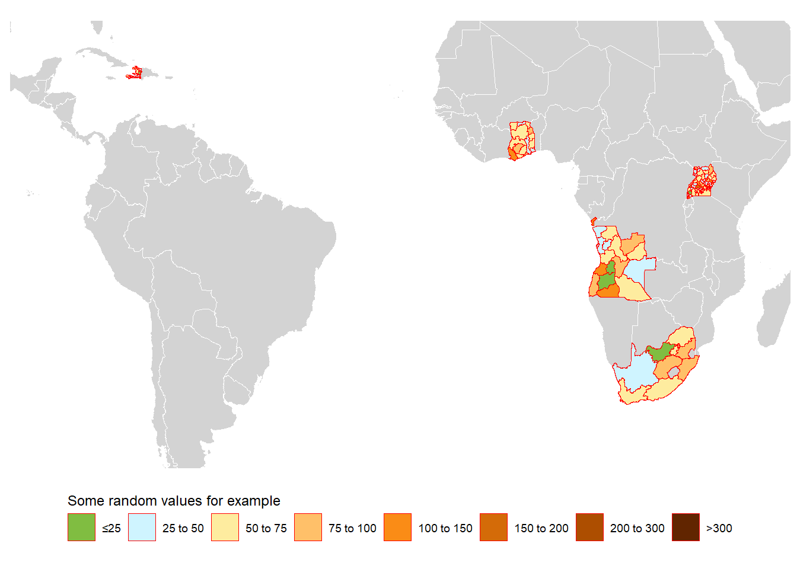

Plot multiple countries on the world map
This migrated post preserves the original rendered output. The original R Markdown source is available as source.Rmd.
This post will show it’s quite easy to download and plot the administrative areas of multiple countries on the world map. I will also showcase a bug that puzzled me for a long time and I recently figured out: strange connecting lines among countries!
The most straightforward way
(You may download the world map from GitHub)
suppressPackageStartupMessages({
library("data.table")
library("ggplot2")
library("rgdal")
library("raster")
library("rgeos")
library("here")
library("ggthemes")
})
# download data from GADM directly and row-bind the spatial polygons data frame
cnames <- c("Haiti", "Togo", "Uganda", "Ghana", "South Africa", "Angola")
download.GADM <- function(cname0) raster::getData("GADM", country = cname0, level = 1)
dt_geos <- raster::bind(lapply(cnames, download.GADM))
dt_geos <- sp::spTransform(dt_geos, CRS("+proj=robin")) # robin transformation
dt_geos_df <- broom::tidy(dt_geos, region = "GID_1")
x_min <- min(dt_geos_df$long)*1.2
x_max <- max(dt_geos_df$long)*1.2
y_min <- min(dt_geos_df$lat)* 1.2
y_max <- max(dt_geos_df$lat)* 1.2
map_theme <- ggthemes::theme_map() +
theme(legend.position = "bottom", legend.direction = "horizontal", legend.justification = c("center"))
shp_world_robin <- readRDS(here::here("../Data/World.shp/sp.world.robin.rds")) # this has to be sourced locally
ggplot() +
geom_polygon(data = shp_world_robin, aes(x = long, y = lat, group = group), fill="lightgray",
colour = "white", size=0.05) +
geom_polygon(data = dt_geos, aes(x = long, y = lat, group = group),
color = "red", size=0.05, fill="#ffc069") +
# if want to crop map:
coord_fixed(xlim=c(x_min, x_max), ylim=c(y_min, y_max)) +
map_theme +
guides(fill = guide_legend(nrow = 1, title.position = "top"))

A more complicated example
Now we will also plot some values on the map. These values need to be merged directly to the spatial polygons sp data frame, or the corresponding data frame. Here I show the second approach: transforming sp data frame into a data frame first. And we can supply either the sp data frame or the data frame to ggplot2::geom_polygon.
Note that in GADM admin 1 shape files, GID_1 is a unique identifier even after binding multiple countries, here we intentionally use region names (the NAME_1 column from GADM file) as the region identifier to show a bug. And in my case we indeed have to use the region names to merge with estimates.
# `region` will become the id/group used to identify each area
# Either broom::tidy or ggplot2::fortify can work:
# dt_geos_data <- broom::tidy(dt_geos, region = "NAME_1")
# dt_geos_data <- ggplot2::fortify(dt_geos, region = "NAME_1")
download.GADM.df <- function(cname0){
dfsp <- raster::getData("GADM", country = cname0, level = 1) # download data from GADM
dfsp <- sp::spTransform(dfsp, CRS("+proj=robin")) # robin transformation
dfsf <- broom::tidy(dfsp, region = "NAME_1") # get df
dfsf$country <- cname0 # add a country identifier
return(setDT(dfsf))
}
dt_geos_data <- rbindlist(lapply(cnames, download.GADM.df))
# imaging we want to plot some estimates, not only the map
dt_admin1 <- unique(setDT(dt_geos_data)[,.(country, id)])
set.seed(1234)
dt_admin1$value <- rgamma(nrow(dt_admin1), shape = 4, scale = 15) # some random values
setkey(dt_geos_data, country, id)
setkey(dt_admin1, country, id)
dt_geos_data_value <- dt_geos_data[dt_admin1]
legend_break <- c(0, 25, 50, 75, 100, 150, 200, 300, 500)
legend_label <- c("≤25", "25 to 50", "50 to 75", "75 to 100", "100 to 150","150 to 200","200 to 300",">300")
legend_color <- c("#80BD41", "#CFF4FF","#feec9f","#ffc069","#fa8c16","#d46b08","#ad4e00","#612500")
dt_geos_data_value$col <- cut(dt_geos_data_value$value, breaks = legend_break, labels = legend_label)The bug: strange connecting lines
ggplot() +
geom_polygon(data = shp_world_robin, aes(x = long, y = lat, group = group), fill="lightgray",
colour = "white", size=0.05) +
geom_polygon(data = dt_geos_data_value, aes(x = long, y = lat, group = group, fill= col),
color = "red", size=0.05) +
coord_fixed(xlim=c(x_min, x_max), ylim=c(y_min, y_max)) + # crop map
scale_fill_manual("Some random values for example", values = legend_color, drop = FALSE) +# Keep all legend item
map_theme +
guides(fill = guide_legend(nrow = 1, title.position = "top"))

The reason is some countries have shared admin names, which comes from NAME_1 in the GADM file (during the broom::tidy or ggplot2::fortify step).
Here, Haiti and Togo have these shared admin 1 names: “Centre.1” and “Centre.2” (see the table below).
The bug is solved by setting group to a unique identifier in the ggplot2::geom_polygon:
dt_geos_data_value[, county_group := paste(country, group, sep = "_")]
unique(dt_geos_data_value[group %in% c("Centre.1"),.(country, id, group, county_group, value)])## country id group county_group value
## 1: Haiti Centre Centre.1 Haiti_Centre.1 24.09058
## 2: Togo Centre Centre.1 Togo_Centre.1 54.32445ggplot() +
geom_polygon(data = shp_world_robin, aes(x = long, y = lat, group = group), fill="lightgray",
colour = "white", size=0.05) +
geom_polygon(data = dt_geos_data_value, aes(x = long, y = lat, group = county_group, fill= col),
# it's important to set `group = county_group` instead of `group = group`
color = "red", size=0.05) +
coord_fixed(xlim=c(x_min, x_max), ylim=c(y_min, y_max)) +
scale_fill_manual("Some random values for example", values = legend_color, drop = FALSE) +# Keep all legend item
map_theme +
guides(fill = guide_legend(nrow = 1, title.position = "top"))

Hope this post is helpful to people who meet similar issues!